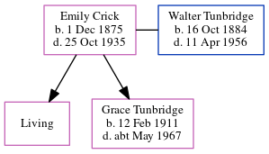

Mary Norquay Tunbridge (née Alexander) 1891 - c1976
[ Home ] | [ Calendar ] | [ Surnames Index ] | [ Errors ] | [ Family History ]Mary Alexander, the wife of Harry Tunbridge (the first cousin twice-removed on the father's side of Nigel Horne), was born in St Margaret's Hope, Orkney, Scotland on 30 Jul 18911,2,3,4,5 and married Harry (a ticket collector with whom she had 3 children: Hilda, Thomas and Harry, along with 1 surviving child) at The Albert Hotel, Kirkwall, Orkney Islands, Scotland on 21 Dec 19101.
During her life, she was living at Milburn Road, Gillingham, Kent, England on 2 Apr 19111; at Church Road, Dover, Kent on 19 Jun 19212; and at 31 Church Road, Dover, Kent on 29 Sept 19393.
She died c. Nov 1976 in Dover, Kent, England4.
Children
- Hilda was born on 12 Apr 1914
- Harry was born on 31 Mar 1920
Citations
- 1911 England Census Online publication - Provo, UT, USA: Ancestry.com Operations, Inc., 2011.Original data - Census Returns of England and Wales, 1911. Kew, Surrey, England: The National Archives of the UK (TNA), 1911. Data imaged from the National Archives, London, England. (Marital Status: MarriedRelation to Head of House: Wife)
- 1921 Census Of England & Wales - Findmypast (was age 30 and the wife of the head of the household)
- 1939 Register - Findmypast (was recorded at this address)
- England & Wales deaths 1837-2007 - Findmypast
- Scotland, Modern And Civil Births 1855-2019 - Findmypast
- 1911 Census for England & Wales - Findmypast (was age 21 and the wife of the head of the household)
Media
1939 Register - TNA/R39/1710/1710B/015/30
Scotland, Modern and Civil Births 1855-2019 - R_687153173
England & Wales deaths 1837-2007 - BMD/D/1976/4/AZ/001154/072
Family Tree
Map
Generated by ged2site. Last updated on Jul 3, 2024
Known Issues
No records of living with anyone